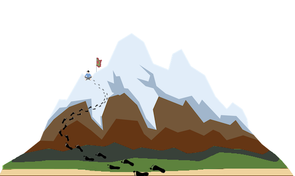
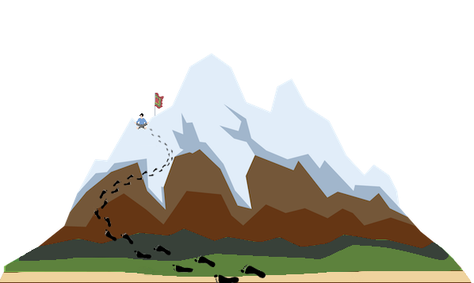

I'm Phil
a Generalist
and aspiring Polymath



I live by the creed 'Stay Curious', which means I am interested in and have a broad knowledge in a vast array of different domains. This gives me flexibility to fit in to a range of environments using a variety of tools quite easily. I'm particularly interested in using VR|AR|XR, biosensing, learning analytics and AI to create user experiences that can develop user skills and abilities applicable beyond the user-interface.
It would be fair to say that the primary driving force throughout the last 50 plus years of my life has been a love of natural world, an interest in how it works and how I can be in the greatest harmony with it.
The second most significant force in my life, for perhaps 40 plus years, has been a constant fascination with how technology can be recruited to make our lives more enjoyable.
In almost every aspect of my working life over the past 30 plus years I have been drawn to both teaching & learning and the sciences that inform it.

For the last 20 plus years I have been increasingly drawn to the philosophical, psychological, spiritual and soulful.

A deep and broad understanding of facilitating learning that comes from a decade of teaching outdoor education; a Masters in Artificial Intelligence; a decade of designing, developing and delivering educational technology in higher education; and a decade of designing, developing and delivering academic development in higher education.
Every new project brings with it a new skill. Some of them are: HTML, CSS, JS, PHP, SQL, XML, Swift, C#, Python, R, xAPI, OpenBadges, Git & Github, AWS, Unity, Blockchain, Photography, Videography, Bitmap Graphics, Vector Graphics, Wordpress, VLEs, MOOCs ...
Fix up houses (electrical, plumbing, carpentry, plus am qualified solar panel installer). Repair machines (servicing own 2 & 4 Stroke tools and vehicles). Tending gardens (Studying Permaculture). Heal bodies (Studying Massage, Shiatsu, Reiki)
A degree in Philosophy. Four years of undergraduate psychology. Studied Ecopsychology. Trained coach. Qualified mindfulness instructor. A committed Buddhist, training for ordination. Personally exploring the connection between soul, psyche and spirit.
Lead Wilderness Adventures. Undergraduate dissertation on Environmental Ethics. Setup and ran charity to recycle computers. Studied Ecopsychology and am training to facilitate the Work That Reconnects.
I would love to hear from you if you think I could help you in any of these things. I'd be particularly interested if you're looking for someone to work with you on VR|AR|XR Cyberdelics!
CONTACT ME© 2020 Phil Marston.